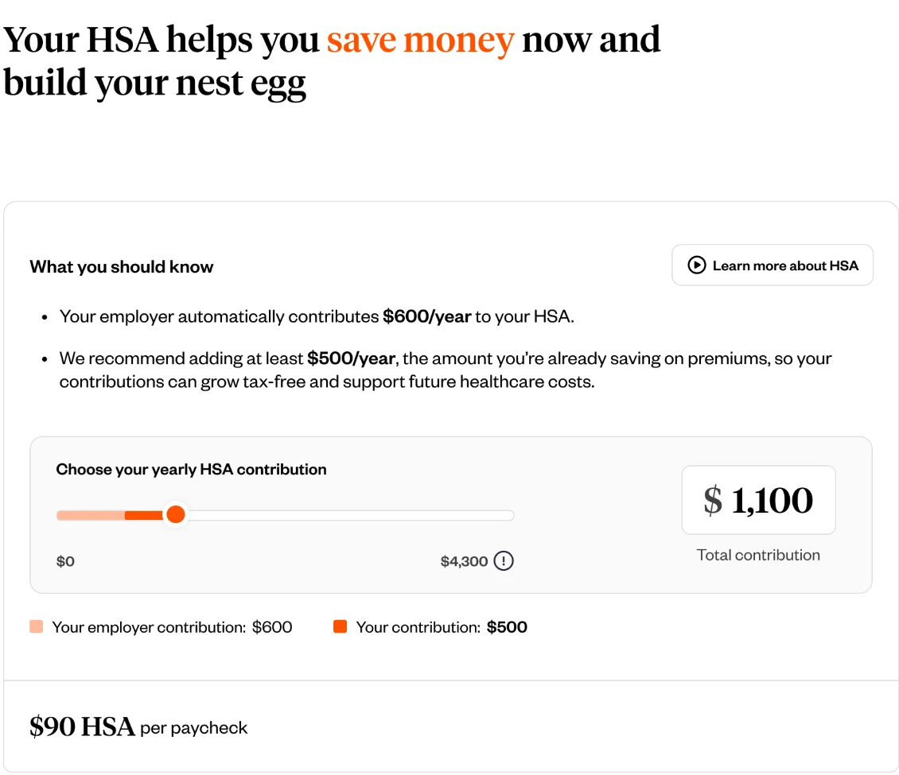
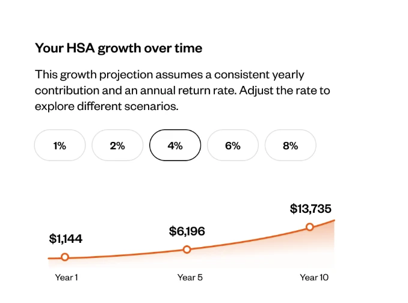
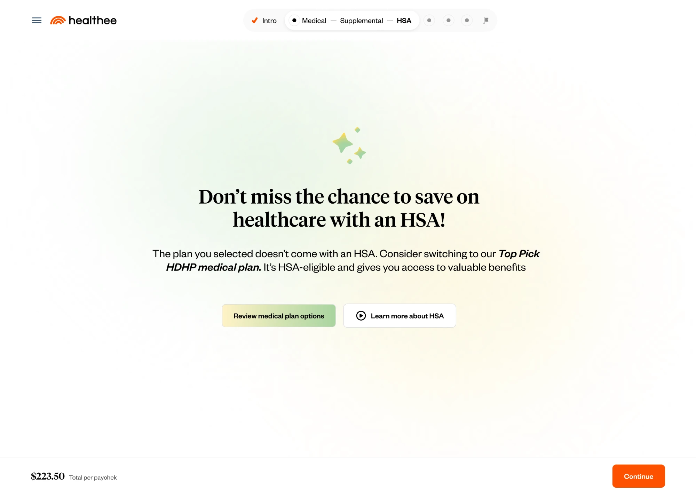

Driving HDHP/HSA adoption
Helping employees understand the value of an HSA when choosing their health plan.

The challenge
HDHP plans offer lower monthly premiums but come with higher out-of-pocket costs. The challenge was to bridge the knowledge gap around HSAs and help employees understand how an HSA could support their healthcare savings and financial decisions.
01
Adapting the HSA experience
We integrated HSA into the enrollment flow as a dedicated step for all employees. The content adapts to their medical plan selection, providing relevant information and guidance based on their eligibility.
02
Dynamic contribution impact calculator
We created an interactive calculator where employees could enter their planned contributions and see how much they could save through an HSA.

03
HSA growth potential
We visualized how their HSA savings could grow over time, helping employees see the potential long-term value of the account.

04
Drop-off flows
Proactively nudge users to revisit missed opportunities tied to HDHP and HSA decisions.
